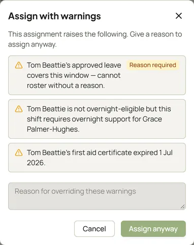
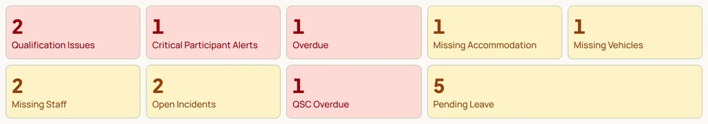
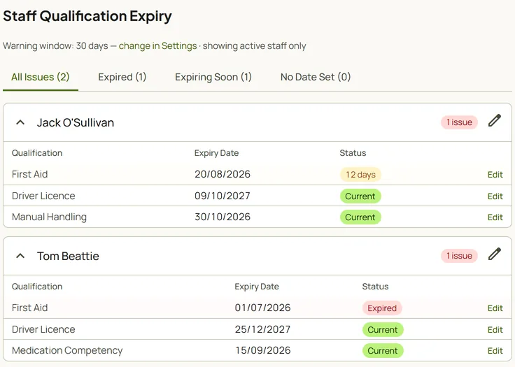
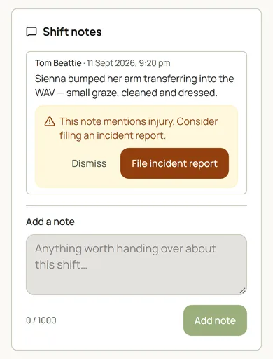
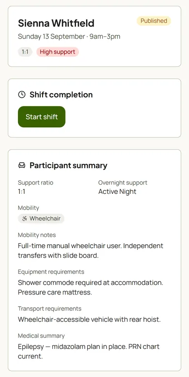
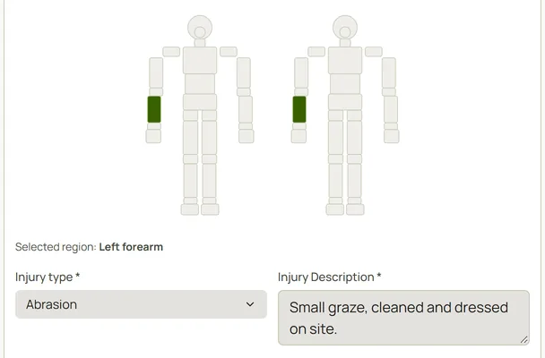
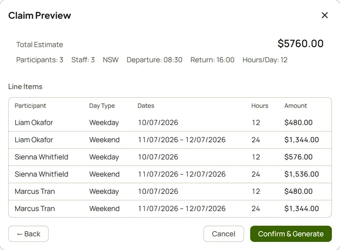
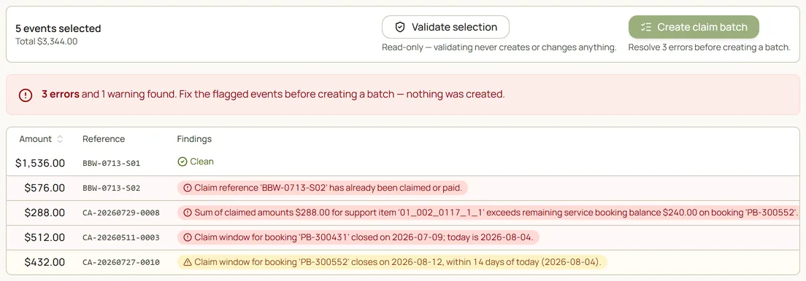
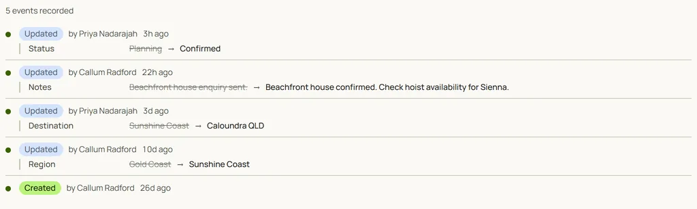

You run the trip. Odip keeps the record.
Trip management software for NDIS providers that run supported holidays. One record for travellers, accommodation, staff, vehicles and funding, from the first plan to the claims.
Upcoming trips, next 60 days
- Missing accommodation
- 1
- Missing vehicles
- 1
- Missing staff
- 2
Trips starting in the next 60 days with no accommodation, vehicle or staff assigned yet.
Before they leave
Plan each trip as one record of its travellers, accommodation, staff and vehicles. Odip counts what is still missing, and runs 18 checks when you assign a shift.
Rostering, the week before
The coordinator drags Tom Beattie onto Grace Palmer-Hughes' Thursday overnight shift.






While they're away
Support workers start, finish and write up their shifts on a phone. Incidents go through a guided form, and Odip flags any reportable incident still unreported 24 hours after it was logged.
On the trip, 9:20 pm
Tom writes up the evening: Sienna bumped her arm transferring into the WAV. A small graze, cleaned and dressed.





When everyone's home
Once the trip is complete, Odip builds each traveller's claim lines from the confirmed bookings and checks claim batches before you upload.
Home from Byron Bay, 4:00 pm
Liam, Sienna and Marcus are home: three travellers, and three different ways their plans are managed.




Counted from the code
These figures are counted from Odip itself, not estimated.
Built with Oassist, a registered NDIS provider of supported holidays.
- 18 roster checks run when you assign a shift. Expired worker screening and a double-booked vehicle are hard stops; 4 of the 16 warnings need a reason.
- 11 incident types in the guided incident form, with a body map for injuries and restrictive-practice checks.
- 5 credentials tracked for expiry: First Aid, driver licence, manual handling, medication competency and worker screening.
- 3 funding types on one trip: NDIA-managed, plan-managed and self-managed.
- 25 audited record types each change logged with who made it and when.
Request early access
Tell us who you are. We will reply by email about early access to Odip.
Request received
Thank you. We will email your address about early access.
That is all for now. You do not need to do anything else.
Already use Odip? Sign in